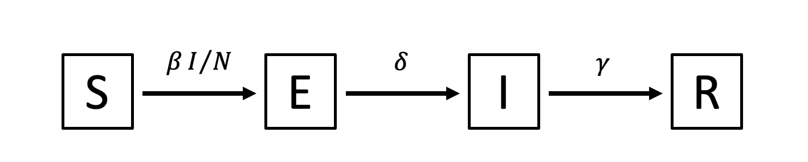

04. Ordinary differential equations (ODEs)
In this practical, we will use the R package deSolve to solve ODE models of infectious disease transmission.
Practical 1: Solving ODEs using deSolve
We will begin by exploring how to use deSolve to solve SI, SIR, and SEIR models.
Susceptible-Infectious model
We’ll start by implementing the Susceptible-Infectious (SI) model from the lecture slides as a series of ordinary differential equations, and solve this model using deSolve. The model has the following diagram:
Here, the force of infection is \(\beta I/N\) (\(\beta\) = beta), and once infected, individuals can infect others for life.
See if you can code up an SI model using the material from the lecture slides. Use \(\beta = 0.4\) as the transmission rate, and solve the model over 0 to 50 days with initial conditions \(S(0) = 99, I(0) = 1\). Then plot the output to visualise your results.
The material from the lecture slides on the ODE SI model is summarized here: ODE SI code.
Your model’s output should look something like this:
- After you have coded the model, answer the following questions:
- Increase the initial number of infectious individuals. What happens to the output?
- What does the
byargument in thetimesvector represent? - Increase the value of the
byargument. What happens to the output? HINT: plot usingtype = "b"to plot both lines and points.
Susceptible-Infectious-Recovered model
Now, let’s create a Susceptible-Infectious-Recovered (SIR) model. Start by creating a new R script and copying and pasting in your code for the SI model; we will edit this code to create the SIR model. (You can also start from the provided ODE SI code here.)
The SIR model has the following diagram:
Here, the force of infection is \(\beta I/N\) and the recovery rate is \(\gamma\) (gamma).
As before, use \(\beta = 0.4\) as the transmission rate, and set \(\gamma\) such that the average duration of the infectious period is 5 days. Assume a total population of 100 individuals, one infectious person at time 0, and no recovered people at the start of the outbreak. Solve the model over 100 days.
Working from your SI model, you will need to: change the name of your model function; add the new parameter \(\gamma\) to the model function and the parms vector; add the new state compartment \(R\) to the model function and the y vector; and make sure you are using the correct initial conditions, parameter values, and times.
- Once you have coded the model:
- Plot the output of the SIR model with different colours for Susceptible, Infected and Recovered individuals.
- Change the value of the transmission rate so that the basic reproduction number is less than one, i.e. \(R_0 < 1\). What happens to the output?
Susceptible-Exposed-Infectious-Recovered model
Now, working from your SIR model, let’s create a Susceptible-Exposed-Infectious-Recovered (SEIR) model with the following diagram:

In this model, once infected, susceptible individuals move to the exposed class. Assume that exposed individuals become infectious after five days.
- Once you have coded the model:
- Plot the output of the SEIR model with different colours for Susceptible, Exposed, Infected and Recovered individuals.
- How does the model output differ from the SIR model you coded previously?
Optional: Add vaccination to the SEIR model
- Extend the SEIR model to include a vaccinated class:
- Draw the model diagram.
- Implement the model in R starting from your SEIR code.
We will assume that susceptible individuals are vaccinated at a rate \(v = 0.01\). The vaccine is 100% effective, so once vaccinated, individuals cannot become infected. HINT: you will need to create a new class \(V\), and you can assume that the initial number of vaccinated individuals is 0.
Solutions to this practical can be accessed here.